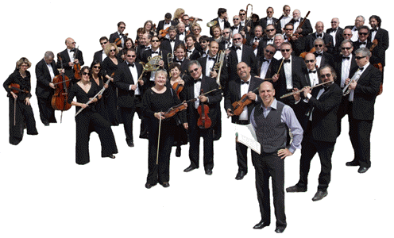

|
| Musicians | ||||
|
 |
||||
|
The main initiative for creating the new orchestra was the important date in the history of our country - 20th anniversary of Aliyah.
Each time that the prime musicians from different Israeli orchestras would come together for a musical project, there was always talk about how greatly fulfilling it is to make music together. Michael Gurfinkel - an Israeli clarinet soloist and pedagogue - took all these conversations to heart and channeled them into reality. He thus began producing concerts for his twins sons - Clarinet Duo Alexander and Daniel Gurfinkel, and this lead him to an expanded interest for new orchestral ventures.
The catalyst for creation of the New Symphony Orchestra was a fated meeting with Arkady Leytush - a former Soviet Union/ American Conductor, Music Director and Principle Conductor of the annual ICOR Holocaust Remembrance Gala Concerts in NY in collaboration with the Brooklyn Philharmonic. Maestro Leytush is also Principle Guest Conductor of the National Symphony Orchestra of Ukrainian, Artistic Director and Principle Conductor of Ridgewood Symphony Orchestra (NJ), as well as the Music Director of the N. Rakhlin Memorial Fund in NY.
Following the successful joint recording of Hampson Sisler - "Japan Tragedy 2011" cantata, dedicated to the memory of those who perished in the Japanese Disaster of 2011, Arkady and Michael both envisioned further creative collaboration and formation of a new orchestra - The New Symphony Orchestra of Israel.
Our main mission is to create programs with special repertoire, premiering never before heard music. Maestro Leytush holds a reputation of being a world-class orchestrator, and is known for including newly orchestrated transcriptions into his programs. This greatly expands the symphony repertoire and makes each performance superbly unique.
Our other aim is creating an orchestra with a unique sound and individual intonation that would be instantly recognizable amongst the world's best - just as voice of Chaliapin and Callas, Oistrakh’s violin and Casals’s cello.
We envision inviting bright soloists, with emphasis on youth, and intend to light new stars on world stages. Congruently, we will host the numerous top-notch performers already revered by audiences everywhere. The creation of this orchestra will also return the numerous brilliant orchestra musicians who couldn't find placement in their homeland Israel and are now dispersed across the globe, significantly affecting the cultural evolution of many countries.
We also wish to create opportunity for young Israeli musicians to exhibit their best talent and have the chance to learn and perform alongside musical masters of our orchestra.
The Orchestra is available for public performances and CD recordings for contemporary composers and eagerly awaits spectacular World Premiers written specifically for us to perform. Of course, each new program will include our beloved classical masterpieces, as well.
Classical music holds a major spiritual key for humanities evolution; it always has and will find an audience as well as material support from contributing individuals, organizations and governments, without which music simply couldn't exist. We are positive that New Symphony Orchestra of Israel will find such support and appreciation!
|
||||
|
|
||||
|